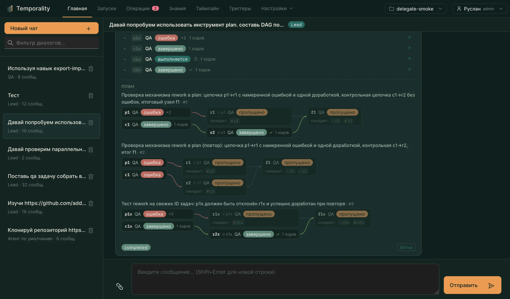

01
Наблюдать
Записывать ход запуска: вызовы модели и инструментов, решения, результаты, вопросы человеку.
EVENT JOURNAL temporality
temporalityTemporality наблюдает, как агент работает, что он узнаёт и чему можно доверять. Проверенный опыт возвращается в следующие задачи — без бесконечной свалки воспоминаний.

Смотрите на реальные рабочие сценарии: диалог с агентом, ход выполнения, происхождение знаний и их жизненный цикл.
Это скриншоты работающего интерфейса, а не перерисованные макеты. Нажмите на изображение, чтобы рассмотреть детали.
Система сохраняет события как первичный источник правды. Знания — производное представление, которое может быть подтверждено, использовано повторно или признано устаревшим.
Записывать ход запуска: вызовы модели и инструментов, решения, результаты, вопросы человеку.
EVENT JOURNALВыделять проверяемые утверждения и связывать каждое с исходным запуском и свидетельствами.
PROVENANCEОтделять гипотезы от подтверждённого опыта. Противоречия и неудачи должны менять статус знания.
LIFECYCLEПодбирать короткие подсказки под новую задачу. При необходимости агент может открыть исходные данные.
CONTEXTUAL HINTSHeavy-профиль нагрузочного теста: каждый ран — четыре модельных хода, две команды в изолированной песочнице, пауза на вопрос человеку и непрерывный стрим финального ответа ~9.4 минуты. Провайдер — детерминированный мок; методология, скрипты и счётчики открыты.
Минимальный путь для первого запуска. Секреты модели хранятся в локальном .env — не в репозитории.
Нужен только Docker Compose — образы уже собраны и опубликованы для amd64 и arm64.
curl -o docker-compose.yml https://raw.githubusercontent.com/RuslanGabbasov/temporality/main/docker-compose.yml
curl -o .env.example https://raw.githubusercontent.com/RuslanGabbasov/temporality/main/.env.example
cp .env.example .envУкажите OpenAI-совместимый API — облачный провайдер или локальный Ollama. Ключ сохранится в локальных секретах.
# .env
TEMPORALITY_MODEL_BASE_URL=…
TEMPORALITY_MODEL_ID=…Compose поднимет PostgreSQL, журнал событий, интерфейс, Temporal, Agent Kernel и веб-инструменты. Мастер онбординга проведёт первый запуск: проект → провайдер → агент → песочница.
TEMPORALITY_VERSION=2026.2.11 docker compose up -dDebugger доступен на порту 3000. Temporal UI — на 8233. Для локальной разработки авторизация выключена, если токены не заданы.
http://localhost:3000http://localhost:8233Temporality разделяет выполнение задач, журнал наблюдений и интерфейс анализа. Это позволяет разбирать прошлые запуски и пересобирать представление знаний без подмены исходной истории.
Temporal workflows · модель · команды агентов · MCP · sandbox · approvals · делегирование · саги · веб-исследования
Append-only события · knowledge projection · hint retrieval · bitemporal queries
Чат · трассы · таймлайн опыта · знания · бюджет проектов · настройки агентов и организации
Память (Mem0, Zep) помнит. Трассировка (LangSmith, LangFuse) показывает. Фреймворки (LangGraph, CrewAI) оркестрируют. Temporality закрывает недостающий слой: durable-исполнение и опыт с происхождением и жизненным циклом — связанный с людьми, доступами и качеством.
| Temporality | Память · Mem0, Zep | Трассировка · LangSmith, LangFuse | Фреймворки · LangGraph, CrewAI | |
|---|---|---|---|---|
| Durable-запуски: переживают сбои, деплои и паузы | ✓ | — | — | ± чекпоинты — через их платформу |
| Человек в потоке: подтверждения и вопросы в мессенджерах | ✓ | — | — | ± interrupt() — без каналов доставки |
| Знания с происхождением, статусом и историей | ✓ | ± без верификации | — | — |
| Возврат релевантного опыта в новые задачи | ✓ | ✓ | — | — |
| Контур качества изменений: оценки, судья, гейт | ✓ | — | ± оценки промптов — без гейта применения | — |
| Навыки с контрактами, версиями и эволюцией | ✓ | — | — | ± описания задач — без контракта и версий |
| Оргструктура, RBAC, политики, секреты | ✓ | — | ± роли в воркспейсе — без оргполитик | — |
| Семантический слой знаний: локальные эмбеддинги без облака | ✓ | ± облако или отдельный сервис | — | — |
| Модель-супервайзер: триаж сбоев, аномалии, конфликты знаний, кандидаты в навыки | ✓ | — | ± трейс-анализ руками | — |
| Метрики человеческого фактора: внимание и простой (HAB/HWT) | ✓ | — | ± латентность | — |
| Self-hosted одним compose, данные у вас | ✓ | ± OSS-редакции с оговорками | ± LangFuse OSS; LangSmith — SaaS | ✓ |
✓ — из коробки · ± — частично или через обходные пути · — — нет. Сравнение отражает типичную специализацию категорий; детали зависят от конкретного продукта. Данные собраны из открытой документации на октябрь 2026.
Раны живут в Temporal: перезапуск сервиса, деплой или уснувший ноутбук не убивают задачу — она продолжается с места остановки.
У каждого знания — автор, источник и статус. Устаревшее не подсматривается, противоречия не теряются, а решаются.
Изменения агентов и навыков проходят оценки на golden-кейсах и LLM-судью с калибровкой. Человек утверждает — система не мутирует сама.
Команды — в изолированной песочнице без привилегий; секреты агент не видит; consequential-действия — только через подтверждение; RBAC и политики оргструктуры.
Подтверждения и вопросы приходят в ваш мессенджер и решаются оттуда. Метрики HAB/HWT показывают, где поток упирается в людей — внимание это или простой.
Весь стек — одним docker compose: PostgreSQL, Temporal, журнал и UI у вас. MCP-серверы и OpenAI-совместимые модели подключаются напрямую.
Посмотрите исходный код, запустите стек и проверьте, как опыт проходит путь от события до следующей задачи.